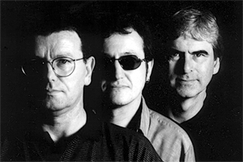

24 марта в Московском Дворце молодежи (МДМ)
на встречу II фестивалю BLUESSUMMIT
состоится концерт легендарной англо-ирландской группы
THE TASTE
Выступление в Москве THE TASTE - это настоящий подарок для любителей "классического" рока.
В нынешнем году группа встречает свое 35-летие. Она образовалась в Ирландии, в 1966 году, вокруг юного гитариста-виртуоза Рори Гэллахера, которому предстояло стать одним из гитарных героев золотой эры рока. Первые полтора года полупрофессионального существования "THE TASTE" выступали в ирландских, западногерманских и западноберлинских клубах. Но когда настала пора штурмовать Лондон, мекку рок-н-ролла, Гэллахер пригласил в настоящих мастеров рок-ритм-секции: Чарли МакКракена (бас-гитара, участник группы Спенсера Дэвиса) и Джона Уилсона (ударные, бывший участник группы Вэна Моррисона "The Them"). Так THE TASTE обрели свой классический состав, и, наравне с Jimi Hendrix Experience и Сream Эрика Клэптона, начали утверждать новый для популярной музыки формат рок-трио, в котором гитарная мощь звука и полет импровизации, подкрепленные драйвом ритм-секции, могли соперничать с симфоническим оркестром в объемности звучания и силе воздействия на слушателя. Гитаристов, способных исполнить роль лидера в таких трио, было совсем немного, и Гэллахер стал одним из первых, кого назвали "героем гитары" (guitar hero).
Первый же альбом THE TASTE имел огромный успех. Группа играла сплав модного блюз-рока с только еще нарождавшимся тогда стилем "прогрессив". Фолк и джазовые мотивы тоже находили свое место в обширном репертуаре группы. Их виртуозные композиции требовали отличной музыкальной подготовки и высочайшего исполнительского класса от всех участников группы. THE TASTE выступали хэдлайнерами практически всех крупнейших фестивалей рок-эпохи; и их игра всегда заражала публику высокой энергетикой и мастерством исполнения. Не случайно концертые альбомы THE TASTE пользовались даже большей популярностью, чем их студийные работы.
В 1995г. безвременная смерть оборвала новый творческий подъем Рори Галлахера. К печальной пятилетней годовщине его соратники по THE TASTE подготовили специальную концертную программу его памяти. Новый гитарист-солист группы исполняет классический репертуар THE TASTE абсолютно аутентично. Программа была с успехом принята на лучших площадках Европы. Настало время показать ее и в Москве.
Программа THE TASTE - TRIBUTE to RORY GALLAGHER будет продемонстрирована в МДМ в рамках подготовки ко второму летнему фестивалю BLUESSUMMIT. Гастроли организованы агентством "Гост-Мьюзик".

"Игра Рори Гэллахера остается нашим главным вдохновением на протяжении всех этих лет в музыке"
Чарли МакКракен
Джон Уилсон
группа "The Taste"
Справки и заявки на аккредитацию по телефону 246-28-01
e-mail: gost-music@mtu-net.ru
|
{kind=link}